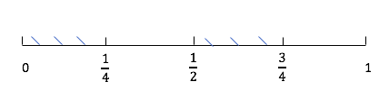
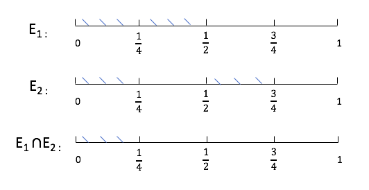
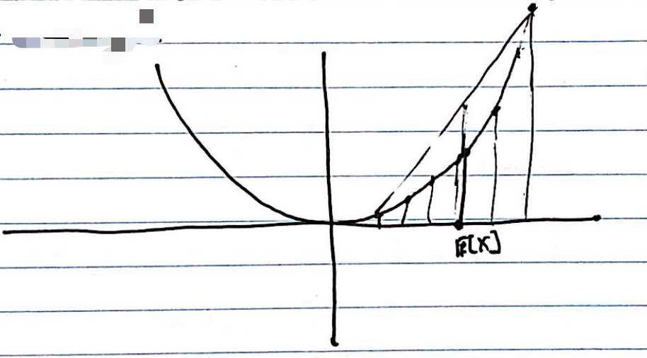

Introduction to probability¶
from IPython.display import IFrame
IFrame(src="https://cdnapisec.kaltura.com/p/2356971/sp/235697100/embedIframeJs/uiconf_id/41416911/partner_id/2356971?iframeembed=true&playerId=kaltura_player&entry_id=1_z0ytojor&flashvars[streamerType]=auto&flashvars[localizationCode]=en&flashvars[leadWithHTML5]=true&flashvars[sideBarContainer.plugin]=true&flashvars[sideBarContainer.position]=left&flashvars[sideBarContainer.clickToClose]=true&flashvars[chapters.plugin]=true&flashvars[chapters.layout]=vertical&flashvars[chapters.thumbnailRotator]=false&flashvars[streamSelector.plugin]=true&flashvars[EmbedPlayer.SpinnerTarget]=videoHolder&flashvars[dualScreen.plugin]=true&flashvars[hotspots.plugin]=1&flashvars[Kaltura.addCrossoriginToIframe]=true&&wid=1_tc16jrvs" ,width='800', height='500')
IFrame(src="https://cdnapisec.kaltura.com/p/2356971/sp/235697100/embedIframeJs/uiconf_id/41416911/partner_id/2356971?iframeembed=true&playerId=kaltura_player&entry_id=1_hx6on400&flashvars[streamerType]=auto&flashvars[localizationCode]=en&flashvars[leadWithHTML5]=true&flashvars[sideBarContainer.plugin]=true&flashvars[sideBarContainer.position]=left&flashvars[sideBarContainer.clickToClose]=true&flashvars[chapters.plugin]=true&flashvars[chapters.layout]=vertical&flashvars[chapters.thumbnailRotator]=false&flashvars[streamSelector.plugin]=true&flashvars[EmbedPlayer.SpinnerTarget]=videoHolder&flashvars[dualScreen.plugin]=true&flashvars[hotspots.plugin]=1&flashvars[Kaltura.addCrossoriginToIframe]=true&&wid=1_86fpdyhi" ,width='800', height='500')
IFrame(src="https://cdnapisec.kaltura.com/p/2356971/sp/235697100/embedIframeJs/uiconf_id/41416911/partner_id/2356971?iframeembed=true&playerId=kaltura_player&entry_id=1_byljdl52&flashvars[streamerType]=auto&flashvars[localizationCode]=en&flashvars[leadWithHTML5]=true&flashvars[sideBarContainer.plugin]=true&flashvars[sideBarContainer.position]=left&flashvars[sideBarContainer.clickToClose]=true&flashvars[chapters.plugin]=true&flashvars[chapters.layout]=vertical&flashvars[chapters.thumbnailRotator]=false&flashvars[streamSelector.plugin]=true&flashvars[EmbedPlayer.SpinnerTarget]=videoHolder&flashvars[dualScreen.plugin]=true&flashvars[hotspots.plugin]=1&flashvars[Kaltura.addCrossoriginToIframe]=true&&wid=1_5ew6hzsq" ,width='800', height='500')
Basic Probability Theory¶
Outcome — Set of possible outcomes
Event — Subset of possible outcomes, an event is something which can happen or not happen
Distribution — measure on the outcome space, just give the probability of each outcome
Independence — “Events that are unrelated”, depends on the distribution
Discrete Examples¶
Coin Flip:
Outcomes: \(\left\{ H, T\right\}\)
Event: If we toss a coin once, there are two possible events: \(\{H\}\) and \(\{T\}\); If we toss a coin twice, the event that the first toss is heads is \(A = \{HH,HT\}\); If we toss a coin three times, the event that the second toss is heads is \(B = \{HHH, THT,HHT, THT\}\).
Distribution: If we toss a coin, the possibility that it is H and the possibility that it is T are the same, that is \(p(\left\{H \right\})=p(\left\{ T \right\})=0.5\).
Rolling a Die:
Outcomes: \(\left\{ 1, 2, 3, 4, 5, 6\right\}\)
Event: some examples \(E_{1}=\left\{ 3\right\}\)— rolling a 3 \(E_{2}=\left\{ 1, 3, 5\right\}\) — rolling an odd number \(E_{3}=\left\{ 2, 4, 6\right\}\) — rolling an even number \(E_{4}=\left\{ 1, 2\right\}\)— rolling either a 1 or 2
Distribution: \(p(\left\{1 \right\})=p(\left\{ 2 \right\})=...=p(\left\{ 6 \right\})= \frac{1}{6}\)(most common case) \(p(\left\{ 1\right\})=\frac{1}{2}, p(\left\{ 2 \right\})=...=p(\left\{ 6 \right\})=\frac{1}{10}\) (for some special die)
Independence: Given events \(E_{1}\) and \(E_{2}\), they are independent if \(p(E_{1} \bigwedge E_{2})=p(E_{1})p(E_{2})\)(the probability that both events appear is equal to the product of the probability that one event appears) \(p(E_{1}|E_{2})=\frac{p(E_{1} \bigwedge E_{2})}{p(E_{2})}=p(E_{1})\) (the conditional probability of \(E_1\) given the event \(E_{2}\) is equal to the probability of \(E_1\))
example of independence: The die roll 2 and 3 are independent; Events \(E_2\) and \(E_4\) are also independent: \(E_{2} \bigwedge E_{4}=\left\{1,3,5\right\} \bigwedge \left\{1,2\right\} =\left\{1\right\}\) \(p(E_{2} \bigwedge E_{4})=p(\left\{1\right\})=\frac{1}{6}\) \(p(E_{2}) p(E_{4})=p(\left\{1,3,5\right\})p(\left\{1,2\right\})=\frac{1}{2}\frac{1}{3}=\frac{1}{6}\)
Independent Copies¶
Coin Flip: 2 independent copies: \( C_{1}=\left\{H,T\right\}, C_{2}=\left\{H,T\right\}\Rightarrow C_{1}\times C_{2} \)
\(H^{\operatorname{P_{H}}}\)
\(T^{P_{T}}\)
\(P_{H} H\)
\(H H\)
\(H T\)
\(P_{T}T\)
\(T H\)
\(T T\)
Event: \(\left\{HT,HT\right\} \Rightarrow\) exactly one head \(\left\{HT,HH,TH\right\} \Rightarrow\)at least one head
Distribution: \(p((H,T))=p_{1}(H)p_{2}(T)\)
Generalized: K-coins independent. \(\left\{H,T\right\}^{K}=\left\{K-tuples \ of \ H,T\right\}\) Distribution. \(p((H,...,T))=p_{1}(H)...p_{k}(T)\) Can generalize this to infinite protucts as well. (Doesn’t hold for dependent events)
Continuous Distributions¶
Ex: Uniform Distribution on \(\left[ 0,1\right]\) . Outcomes: \(\left[ 0,1\right]\) Events: Ex: the event \(\left[ 0,0.5\right]\) means random number \(\leq\) 0.5 Ex: the event \(\left[ 0,0.25\right] \bigcup \left[ 0.5,0.75\right]\) means random number less than \(0.025\) or between \(0.5\) and \(0.75\)

Distribution: A distribution a rule which gives the probability of any event. Properties to satisfy: if events \(E_{1}, E_{2}, ..., E_{n},... \mbox{satisfy that} \ E_{i} \bigcap E_{j}= \varnothing\), then
\(p(E_{1} \bigcup ... \bigcup E_{n} \bigcup ...) = \sum_{i=1}^{\infty}p(E_{j})\)
\(p(E)=\int_{E} d_{x}\), “length of E”
examples 1: \(E_{1}=\left[ 0,0.5\right]\)
\[ P\left(E_{1}\right)=\int_{E_{1}} d_{x}=\int_{0}^{1 / 2} d x=\frac{1}{2}. \]examples 2: \(E_{2}=\left[ 0,0.25\right] \bigcup \left[ 0.5,0.75\right]\)
\[ p\left(E_{2}\right)=\int_{E_{2}} d x=\int_{0}^{1 / 4} d x+\int_{1 / 2} ^{3/4}d x=\frac{1}{4}+\frac{1}{4}=\frac{1}{2} \]

Independence: Two events \(E_{1}, E_{2}\) are independent if
For example,
\( E_{1} \cap E_{2}=[0,0.5] \cap\left(\left[0, \frac{1}{4}\right] \cup\left[\frac{1}{2}, \frac{3}{4}\right]\right) \)
Frist two binary digits are like two independent coin flips. Every binary digit is like an independent coin flip, so we ca think of therandom number as being an infinite sequence of coin flips. In general, we’ll consider distribution defined by a probability density function p(x). The probability of an event is given by \(P\left(E\right)=\int_{E_{1}} p(x)d_{x}\)
Outcomes: \(\left[ 0,1\right]\)
Density function: \(p(x)=1\) (\(\int_0^1 p(x)=1\))
Gaussian/ Normal Distribution¶
Outcomes:
Events: Subsets of R
Density function: \(P(x)=\frac{1}{\sqrt{2\pi}} e^{-x^{2} / 2}\) Means that for any event \(E\),
Cummulative distribution Function
Note that \(\lim_{x\rightarrow \infty} F(x)=1\).
Random, Variable, Mean, Variance¶
Recall:
Set if outcomes: \(\Omega\)
Event: Subset of outcomes: \(E\)
Probability Distribution: \(p(x)\)
Random Variable¶
Defin: A random variable X is a function \(X: \Omega \rightarrow S\) Here \(S=R, R^{d}\), but could be arbitrary.
Ex: Rolling a die:
Outcomes: \(\Omega={1,2,...,6}\)
Events are subsets of \(\Omega\)
Distribution: \(p(1)=p(2)=...=p(6)=\frac{1}{6}\) Suppose we roll the die, then if the die comes up d times, you win d dollars, minus 1 dollar if it’s even. The amount you win is a random variable. \(\begin{array}{l} X_{1}: \Omega \rightarrow R\\ X_{1}(1)=1 \\ X_{1}(2)=1 \\ X_{1}(3)=3 \\ X_{1}(4)=3 \\ X_{1}(5)=5 \\ X_{1}(6)=5 \end{array}\) Can define multiple random variables on a single outcome space \(\Omega\).
Ex: Rolling a die. If the die comes up d times, you get d dollars. If d is even, then you give a dollar to your friend. \(X_{1} \leftarrow\) your winnings, \(X_{2}\leftarrow\) your friends winnings.
From here on out \(\Omega\) will be fixed, we talk about different random variables on \(\Omega\).
Mean of random variable¶
Defin: Mean of a random variable \(X\). Expectation of \(X\):
Ex:
Variance of Random Variables¶
Defin: Variance of a Random Variable \(X\): $\(V[X]=\mathbb{E}\left[X^{2}\right]-\mathbb{E}[X]^{2}=\mathbb{E}\left[(X-\mathbb{E}[X])^{2}\right]\)$
Ex:
Variance measures “how much \(X\) deviates from it’s average”.
{width=”.35\textwidth”}
Independenve of Random variables¶
Defin: Two random variables \(X_{1},X_{2}\) are independent if for any \(\alpha, \beta,\) \(E_{1}=\left\{w: X_{1}(\omega)<\alpha\right\}, E_{2}=\left\{w: X_{2}(\omega)<\beta\right\}\) are independent events.
Ex: \(X_{1} , X_{2}\) are independent: if \((\alpha, \beta) \quad \alpha=4, \quad \beta=\frac{1}{2}\),
Properties of E, V, Independence¶
If \(X_{1}, X_{2}\) are random variable, then
If \(X_{1}, X_{2}\) are independent random variables, then
From this, we get if \(X_{1}, X_{2}\) are independent,